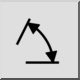
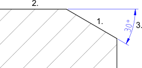

Vinkel
Verktøylinje/ikon:


Meny: Dimensjon > Vinkel
Snarvei: D, N
Kommandoer: dimangular | dn
Dette er en automatisk oversettelse.
Verktøylinje/ikon:


Oppretter vinkeldimensjoner mellom to referanselinjer som vist her:
